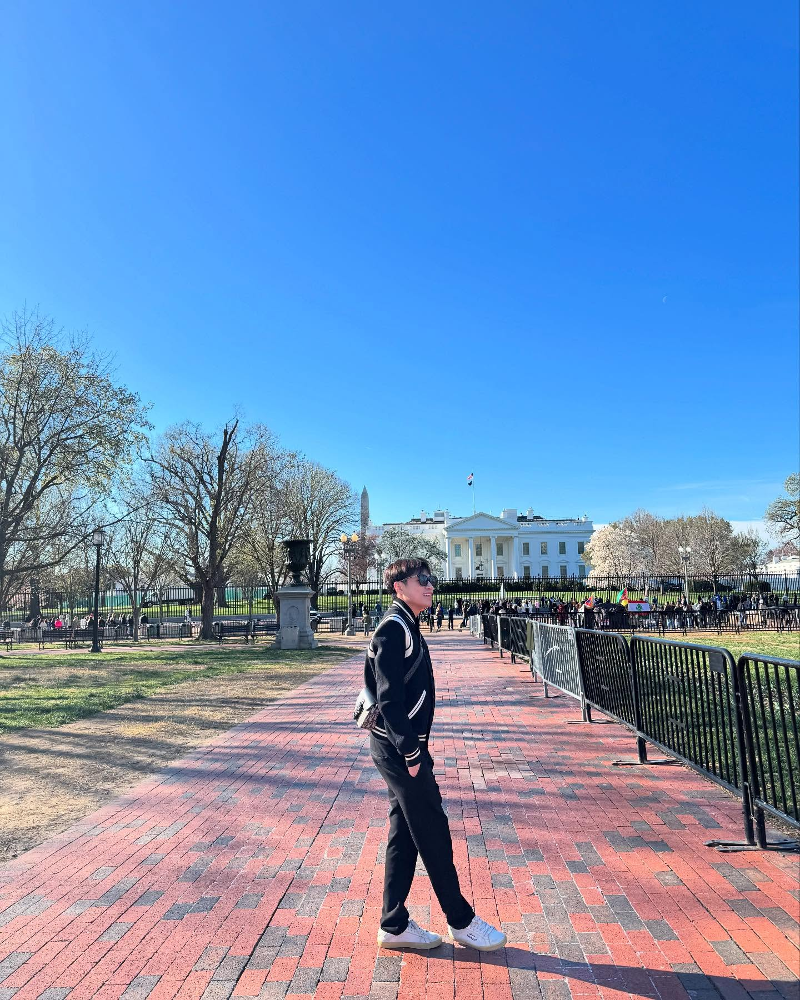

About Thanh Nguyen
Thanh Nguyen is a passionate web developer and digital creative focused on crafting immersive, accessible experiences on the web.
Mission
At The Nguyen Collective, my mission is to bridge creativity and technology by designing beautiful, functional websites that leave a lasting impact.
Skills
- HTML5, CSS3, JavaScript
- Responsive Web Design
- Interactive UI/UX Development
- GitHub and Version Control
- Adobe Photoshop and Illustrator
Values
I believe that design should be intuitive, development should be purposeful, and technology should be used to make people's lives better. Every project I create focuses on accessibility, usability, and beauty.
Fun Facts
- I love late-night coding with coffee in hand ☕.
- Photography and digital art are my creative outlets.
- Favorite quote: "Simplicity is the ultimate sophistication." — Leonardo da Vinci
Future Goals
I aim to continue growing as a web developer, exploring advanced JavaScript frameworks, and eventually contributing to open-source projects that promote digital creativity and accessibility.